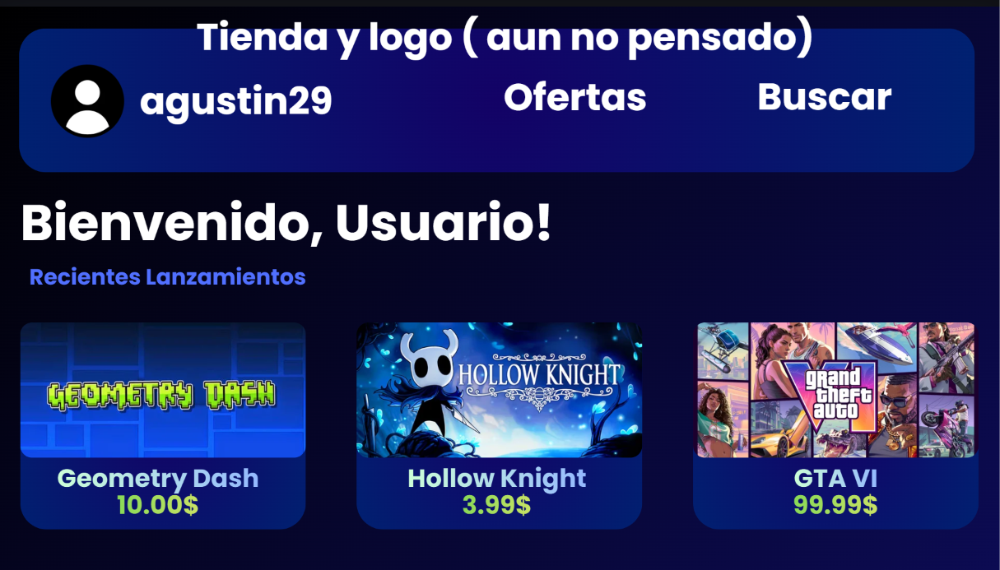
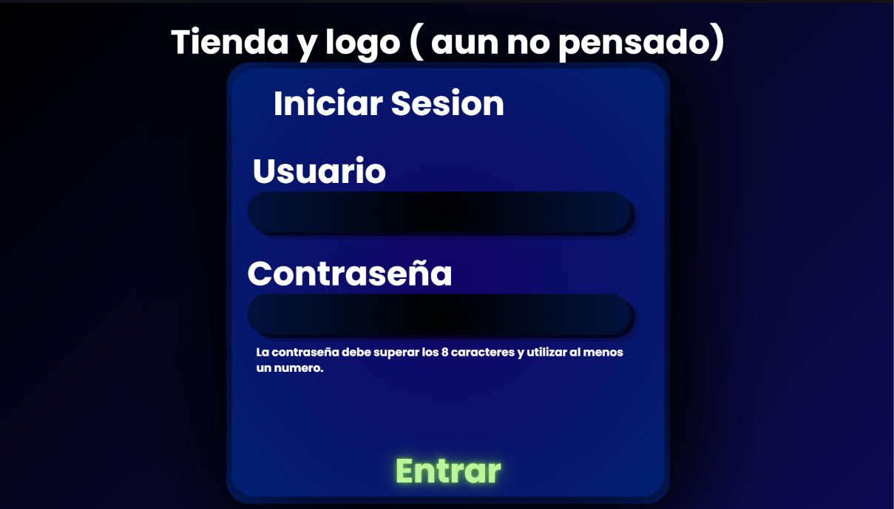

- El crud y login que voy a realizar va a tratarse sobre un tema que me gusta; los videojuegos. va a ser una tienda nueva, que sea similar a otros launchers ya, como lo es steam, epic games, etc. Va a tener un estilo medio azulado oscuro, mas similar a steam.
- Primero, al entrar a la pagina, el usuario va a tener que registrarse. Una vez adentro, los datos ya van a estar cargados a la base de datos en PHPMyAdmin, y el usuario va a tener que poner su correo y contraseña para poder entrar. Eso es si es un usuario. Si es un vendedor, va a tener que iniciar sesion (de igual forma) y va a poder subir sus videojuegos. Ahi es donde entra el crud, ya que el vendedor va a poder crear leer actualizar y eliminar los juegos que vaya a subir. El usuario va a poder ver los juegos subidos y añadirlos a su carrito, y (de forma falsa, obviamente) comprarlos. Dependiendo del rol del usuario, (es decir, si es comprador o vendedor), el mensaje de bienvenida va a ser diferente. (Hola usuario, o Hola vendedor.)
Como ya fue mencionado previamente, la pagina va a tener un estilo similar a steam. Abajo podra ver 2 ejemplos visuales (puramente esteticos) de como se va a ver el proyecto finalizado. No todas las ideas van a ser finales.


Pagina web hecha por Agustin Yardin Rouco - 4 A
Esta pagina muestra un breve informe sobre lo pensado para el proyecto final
agustinyardinrouco@gmail.com